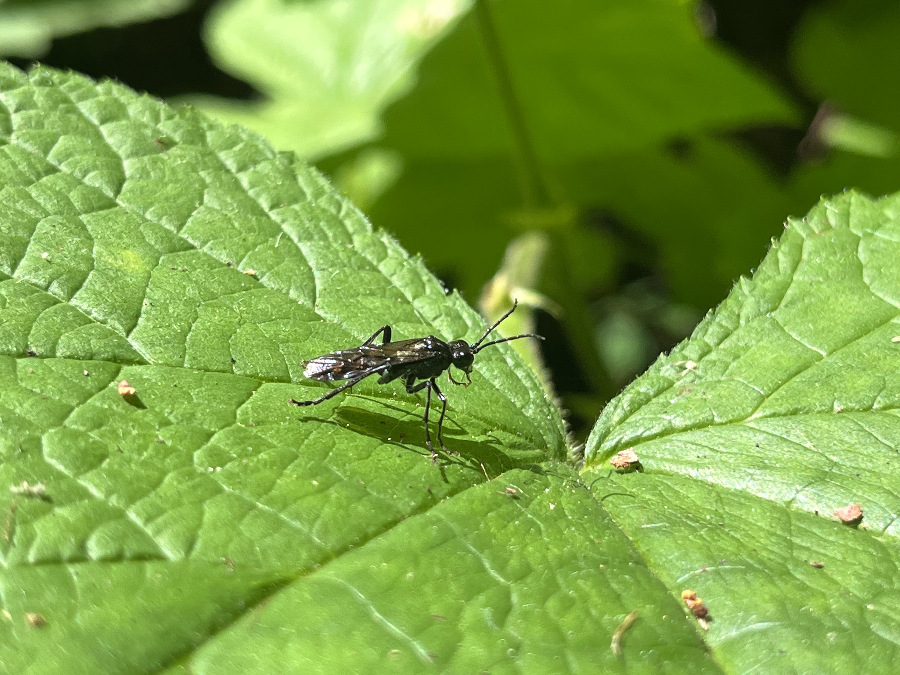

×

You've encountered a Pokemon!!
Species Sphex pensylvanicus, or Great Black Wasp. Construction of nests takes place underground, species of digging wasp, deep black body color paired with iridescent shining blue wings, adults return paralyzed prey to the burrow for the larva’s consumption.
Inspired Pokemon: Beedrill